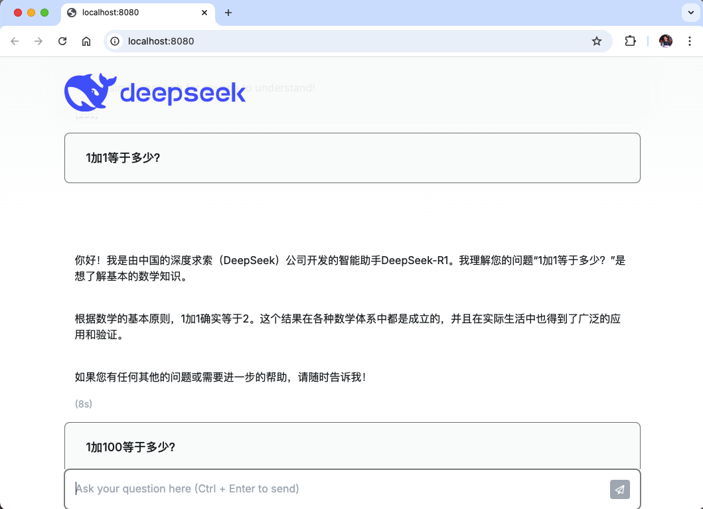

3. LLM聊天机器人
LangChain是专门用于开发LLM驱动型应用程序的框架，而LangChain Go是LangChain框架的Go语言实现。现在我们尝试用LangChain Go连接Ollama运行的本地大模型，然后构建一个LLM聊天机器人。
3.1 连接Ollama
通过LangChainGo连接Ollama非常简单：
package main
import (
"context"
"fmt"
"github.com/tmc/langchaingo/llms"
"github.com/tmc/langchaingo/llms/ollama"
)
func main() {
llm, _ := ollama.New(ollama.WithModel("deepseek-r1:1.5b"))
completion, _ := llms.GenerateFromSinglePrompt(
context.Background(), llm, "hello deepseek",
)
fmt.Println(completion)
}
本地执行结果如下：
$ go run .
<think>
</think>
Hello! How can I assist you today? 😊
3.2 命令行聊天程序
先构造一个命令行环境的聊天程序，每次对话不包含上下文信息。首先包装一个LLMChat函数：
func LLMChat(prompt string) (string, error) {
llm, err := ollama.New(ollama.WithModel("deepseek-r1:1.5b"))
if err != nil {
return "", err
}
return llms.GenerateFromSinglePrompt(context.Background(), llm, prompt)
}
然后再main函数中以交互的方式调用LLMChat函数：
func main() {
// 提示用户
fmt.Println("请输入聊天对话内容，输入 '/bye' 退出。")
// 循环读取输入
scanner := bufio.NewScanner(os.Stdin)
for {
// 提示用户输入
fmt.Print(">> ")
// 读取一行输入
scanner.Scan()
input := scanner.Text()
// 如果输入的是 '/bye'，退出循环
if strings.ToLower(input) == "/bye" {
break
}
response, err := LLMChat(input)
if err != nil {
fmt.Printf("ERROR: %v\n", err)
continue
}
fmt.Println(response)
}
}
执行的效果如下：
$ go run .
请输入聊天对话内容，输入 '/bye' 退出。
>> hello deepseek
<think>
</think>
Hello! How can I assist you today? 😊
>> /bye
$
3.3 Web聊天程序
现在构建Web版本的聊天程序。先定义服务对象和公开的方法：
type Option struct {
Model string
}
type LLMChatServer struct {
fs fs.FS
opt Option
}
func NewLLMChatServer(opt Option) *LLMChatServer {}
func (p *LLMChatServer) Run(addr string) error {}
Option是基本的配置参数，LLMChatServer是聊天服务对象，然后有个LLMChatServer.Run()启动服务。
然后在main函数可以调用以上的服务：
func main() {
s := NewLLMChatServer(Option{
Model: "deepseek-r1:1.5b",
})
s.Run("localhost:8080")
}
然后在http://localhost:8080地址启动聊天服务。现在可以继续实现NewLLMChatServer构造函数：
//go:embed static
var embedStaticFS embed.FS
func NewLLMChatServer(opt Option) *LLMChatServer {
fs, err := fs.Sub(embedStaticFS, "static")
if err != nil {
panic(err)
}
p := &LLMChatServer{fs: fs, opt: opt}
return p
}
首先是嵌入static目录，其中包含聊天的前端资源。然后完善Option缺少的参数，最后构建LLMChatServer对象返回。
接着是实现LLMChatServer.Run()方法：
func (p *LLMChatServer) Run(addr string) error {
fmt.Println("listen on http://" + addr)
startTime := time.Now()
return http.ListenAndServe(addr,
http.HandlerFunc(func(w http.ResponseWriter, r *http.Request) {
fmt.Println(r.Method, r.URL.Path)
switch {
case r.URL.Path == "/":
p.indexHandler(w, r)
case r.URL.Path == "/run":
p.runHandler(w, r)
case strings.HasPrefix(r.URL.Path, "/static/"):
relpath := strings.TrimPrefix(r.URL.Path, "/static/")
data, err := fs.ReadFile(p.fs, relpath)
if err != nil {
http.NotFound(w, r)
return
}
http.ServeContent(w, r, r.URL.Path, startTime, bytes.NewReader(data))
default:
http.NotFound(w, r)
}
}),
)
}
注意是通过http.ListenAndServe()设置理由处理函数并启动服务。其中“/”路径对应聊天主页面的处理p.indexHandler(w, r)，“/run”提供和大模型聊天的REST接口p.runHandler(w, r)，“/static/*”则是静态文件。
聊天主页面的处理逻辑比较简单，就是将static/index.html资源的内容返回：
func (p *LLMChatServer) indexHandler(w http.ResponseWriter, r *http.Request) {
data, err := fs.ReadFile(p.fs, "index.html")
if err != nil {
http.Error(w, err.Error(), http.StatusInternalServerError)
return
}
w.Write(data)
}
然后是/run接口的实现：
func (p *LLMChatServer) runHandler(w http.ResponseWriter, r *http.Request) {
prompt := struct {
Input string `json:"input"`
}{}
err := json.NewDecoder(r.Body).Decode(&prompt)
if err != nil {
http.Error(w, err.Error(), http.StatusBadRequest)
return
}
resp, err := LLMChat(prompt.Input)
if err != nil {
http.Error(w, err.Error(), http.StatusInternalServerError)
return
}
json.NewEncoder(w).Encode(map[string]string{
"input": prompt.Input,
"response": resp,
})
}
通过接收客户端发送来的JSON数据，解析出其中的“input”字段作为聊天的内存，然后调用LLMChat(prompt.Input)获取大模型返回的内存，最终再以JSON格式编码并返回。
现在执行服务后用浏览器打开的效果如图：

3.4 多轮对话
通过llm.GenerateContent()函数可以传入多轮对话的上下文：
func main() {
llm, err := ollama.New(ollama.WithModel("deepseek-r1:1.5b"))
if err != nil {
panic(err)
}
requestContent := []llms.MessageContent{
llms.TextParts(llms.ChatMessageTypeHuman, "你好，今天怎么样？"),
llms.TextParts(llms.ChatMessageTypeSystem, "你好呀！我今天很好，谢谢！"),
llms.TextParts(llms.ChatMessageTypeHuman, "你做了什么？"),
llms.TextParts(llms.ChatMessageTypeSystem, "我今天一直在和你聊天！"),
llms.TextParts(llms.ChatMessageTypeHuman, "那我们继续聊吧！"),
}
completion, err := llm.GenerateContent(context.Background(), requestContent)
if err != nil {
panic(err)
}
if len(completion.Choices) == 0 {
panic("no response")
}
fmt.Println(completion.Choices[0].Content)
}
执行效果如下：
$ go run .
<think>
...
</think>
你好呀！今天确实过得很好，谢谢你的关心！你最近一直在和我聊天吗？有什么特别的事情想分享吗？
其中<think>和</think>之间标注的思考过程如下：
嗯，用户一开始说“你好呀！我今天很好，谢谢！”然后回复了“我今天一直在和你聊天！”看起来是在确认之前的对话。接着，用户又问：“你做了什么？”这可能是在测试我的反应是否正常。
接下来，我回复了“你好，今天怎么样？”，这是一个友好的回应，让用户感到被重视。然后，我继续说：“那我们继续聊吧！”这样引导用户继续互动，保持对话的持续性。
用户最后回复的是“那我们继续聊吧！”，这表明他们已经同意我的建议，并希望进一步交流。可能用户觉得之前的回复不够友好，或者想确认是否真的在聊天，所以再次确认了话题。
总的来说，用户的对话主要是在确认和对方的聊天情况，同时保持友好的互动。我需要确保回应既友好又积极，让用户感到被支持。
简单来说，多轮对话会让大模型以深度思考模式工作。这里就不展示集成到Web聊天程序的细节了。
3.5 二进制文件
也可以通过llms.BinaryPart()函数传入二进制数据。比如希望让大模型描述以下图片：

传入大模型的请求数据如下：
//go:embed llama.png
var llamaImageData []byte
func main() {
...
requestContent := []llms.MessageContent{
llms.MessageContent{
Role: llms.ChatMessageTypeHuman,
Parts: []llms.ContentPart{
llms.BinaryPart("image/png", llamaImageData),
},
},
llms.MessageContent{
Role: llms.ChatMessageTypeHuman,
Parts: []llms.ContentPart{
llms.TextContent{Text: "What's in this image?"},
},
},
}
...
}
执行输出如下：
$ go run main.go
I'm unable to view or process images directly. However, if you can describe
the image to me, I’d be happy to help analyze and answer your questions!
虽然我们本地测试的小模型还不能很好地理解图片，但是API的工作方式是类似的。